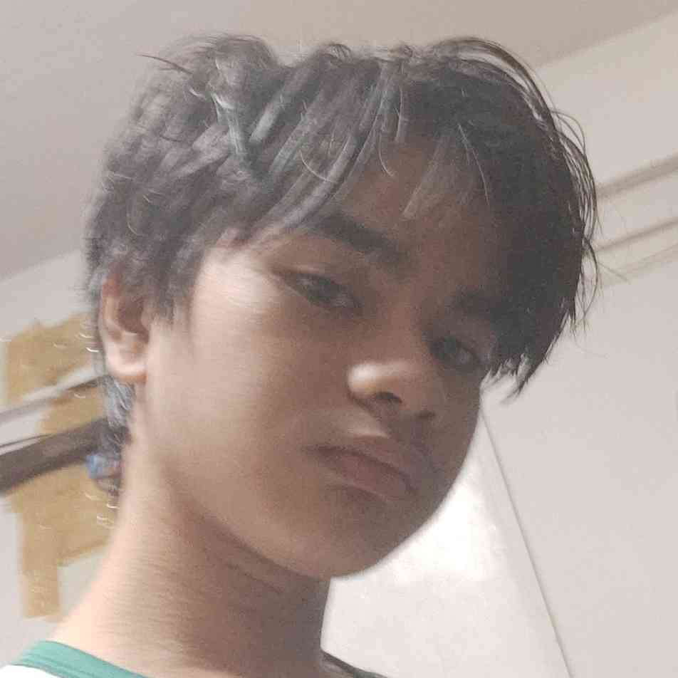

"Therefore, whenever Gurt involves himself with anything, you tell him to 'Sybau Gng✌ðŸ˜ðŸ’”'"
- First Law of Normal Sybauology
Our Basic Info:
Sybauology is a term coined in the 'Sybau' friend group. It is not an actual study but just an inside joke (a pretty small one at that I guess). The humor is inspired by the usual lingo on Instagram Reels. The humor that overuses abbreviations like "ts pmo icl js sybau gng lk osrs ts mk me md brh". Well that's pretty much the jist of it.
Branches / Other Studies of Sybauology:

Normal Sybauology
Normal Sybauology as first synthesized by Deshmukh

Complex Sybauology (Sygauntology)
Sygauntology as further a further improvision of Sybauology by Ipac
Ethics of Sybauology (Gurtology)
Gurtology is an exploration and improvision of ethics of Sybauology by Miguel

Plaitology (Xybauology)
Plaitology is the alternative of everything in Sybauology as proposed by Cerda. Other sources may name this Xybauology, to better give the owner's name respect. This secondary name was proposed by Marion.
